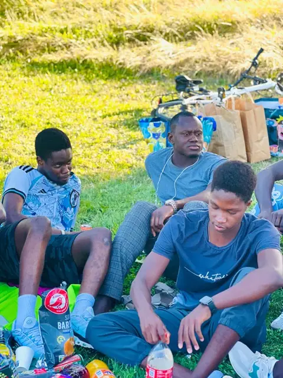
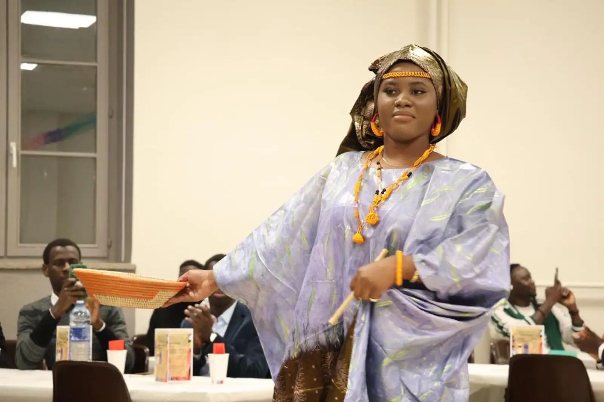
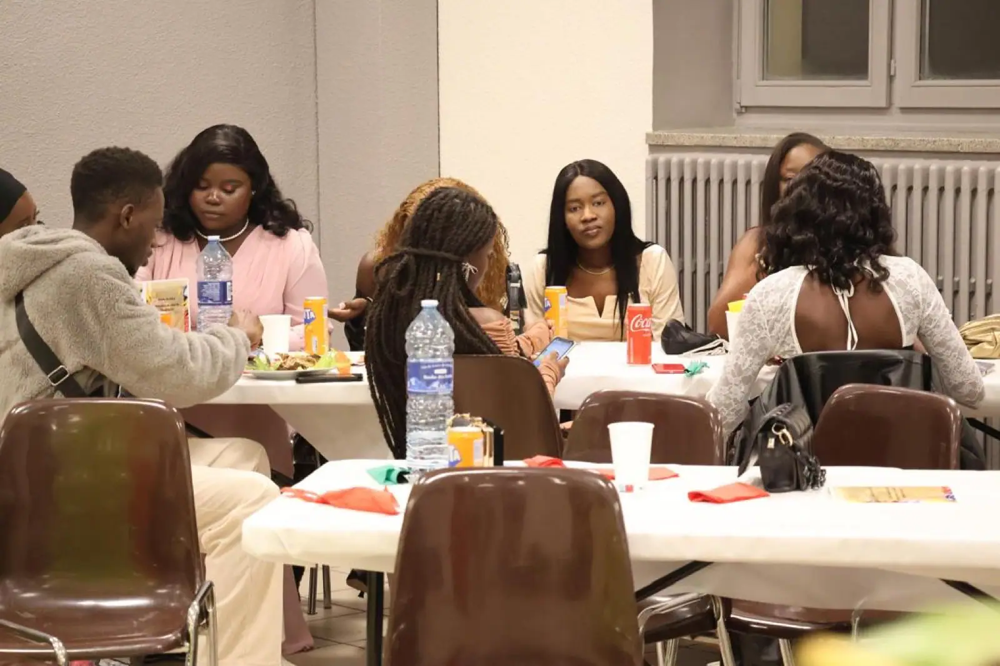
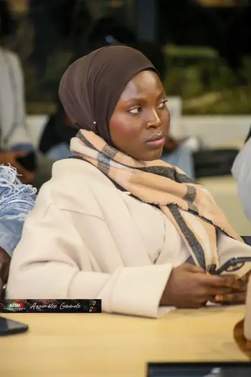

Navétanes du Grand Est : une victoire, puis une sortie de route à Strasbourg
Metz élimine Nancy aux tirs au but, avant de s'incliner en finale régionale.
Lire l'articleCulture
Ce n'est pas rien de faire venir plus de cent personnes un 28 décembre, entre Noël et le jour de l'an, dans une salle du Saulcy plutôt que devant un film en pyjama. C'est pourtant ce qui s'est passé pour la journée d'intégration de l'AESM en 2024 : défilé de tenues traditionnelles, pièce de théâtre, repas partagé, et le lancement d'un parrainage entre anciens et nouveaux étudiants.
Tout n'a pas commencé le 28. La veille, une rencontre de football opposait les « anciens » aux « nouveaux » — une manière un peu informelle de faire connaissance avant le grand rendez-vous du lendemain. Ce sont les nouveaux qui l'ont emporté, ce qui a donné matière à plaisanter pendant une bonne partie de la soirée du 28.
La journée s'est ouverte sur un défilé de tenues traditionnelles. Boubous, tenues brodées, coiffes — chacun présentait ce qu'il avait apporté ou emprunté pour l'occasion. Ce genre de moment paraît anecdotique raconté après coup, mais il joue un rôle précis : donner aux nouveaux arrivants, souvent en France depuis quelques semaines seulement, une preuve concrète qu'ils n'ont pas à choisir entre leur culture et leur nouvelle vie à Metz.

Le moment le plus fort de la journée a été la pièce de théâtre montée par la commission culturelle, consacrée au massacre des tirailleurs sénégalais de Thiaroye. En décembre 1944, des tirailleurs ouest-africains ayant combattu pour la France, rassemblés au camp de Thiaroye près de Dakar et réclamant le versement de leurs soldes, avaient été tués par l'armée française. Quatre-vingts ans plus tard, presque jour pour jour, une troupe d'étudiants amateurs rejouait cet épisode devant une salle du Saulcy.
Monter une pièce sur ce sujet, avec les moyens d'une association étudiante, n'a rien d'évident. Le choix dit quelque chose de ce que la commission culturelle voulait faire de cette journée : pas seulement une fête, mais aussi un rappel — que l'histoire qui relie le Sénégal et la France ne se limite pas aux boursiers et aux visas étudiants.
Après la pièce, la soirée a basculé vers quelque chose de plus léger : un repas sénégalais partagé à table, où l'énergie retombe et où les conversations reprennent. C'est aussi à ce moment qu'a été présenté le nouveau bureau de l'association, élu fin octobre sous la présidence de Mamadou Seye, et qu'a été officiellement lancé le parrainage « Anciens-Nouveaux » : chaque nouvel étudiant se voit associé à un étudiant déjà installé à Metz depuis plus longtemps, pour avoir un contact direct plutôt qu'un numéro dans un groupe WhatsApp.

La journée a été soutenue par l'Université de Lorraine, ce qui a permis à l'association de réunir les étudiants autour d'un programme culturel, solidaire et ouvert à tous.
Ce que cette journée dit, au fond, c'est qu'on peut faire tenir ensemble une pièce sur un massacre colonial, un défilé de mode improvisé et un repas de fête, sans que l'un affaiblisse l'autre. C'est même sans doute pour ça qu'elle a marqué autant de monde.
À lire aussi

Metz élimine Nancy aux tirs au but, avant de s'incliner en finale régionale.
Lire l'article
Bilan du mandat 2024-2025 et élection d'Oumar Ka Thiam à la présidence.
Lire l'article